A small black pill that replaces the Windows 11 taskbar. It shows the time and what's playing, steps out of the way when you're working, and opens into a full control centre when you click it.
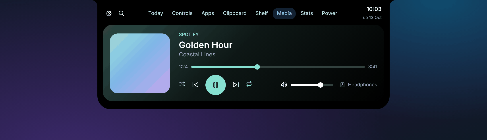
Why
Most of the time it's a tidy pill showing the time and date, plus little music bars when something's playing.
When the app underneath is maximised, it slides out of sight. Rest the mouse at the top edge to bring it back.
Apps, music, Wi-Fi and Bluetooth, clipboard, a file shelf, system stats and power options, one click away.
Tour
The pill shows the time and date, plus battery, music or download speed when there's something to show. Rest your mouse on it for the song, any download and a row of your apps, with your pinned favourites first.
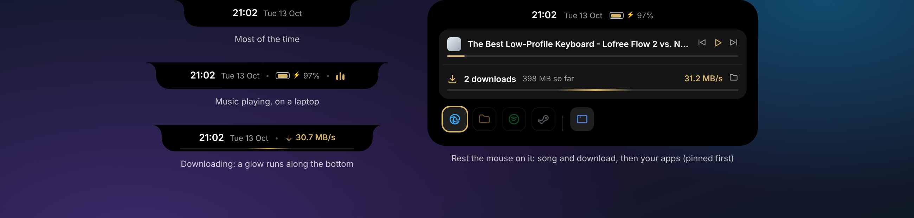
Every installed app with Starred, Recent and Applications sections. Start typing to search; initials work too. Open apps are marked, and clicking them brings back the window you already have.
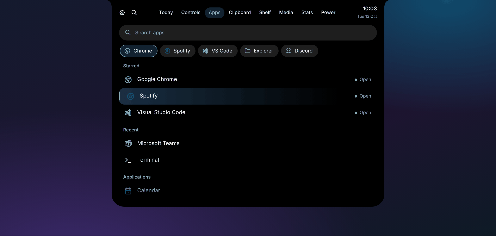
Press Ctrl+Space in any app and the island drops down ready to search. Windows Settings pages show up too, so “blue” finds Bluetooth & devices. Arrow keys and Enter, and you're there.
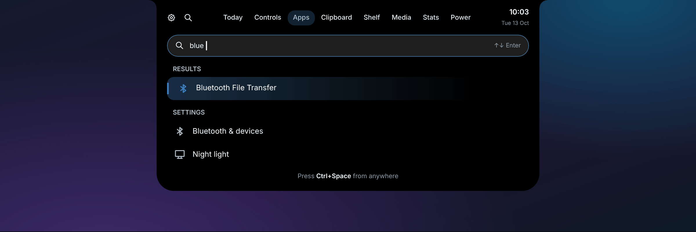
Switches for Wi-Fi, Bluetooth, sound, microphone and dark mode, with a compact player, volume and shortcuts to Windows Settings, Quick settings, notifications and tray icons.
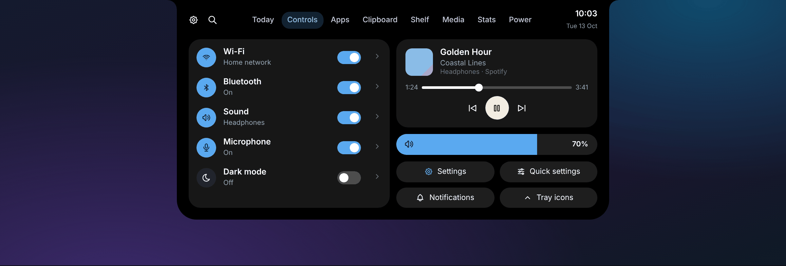
A full player that picks up the colour of the album artwork. It works with Spotify, browsers, Media Player and anything else in Windows' own media controls.
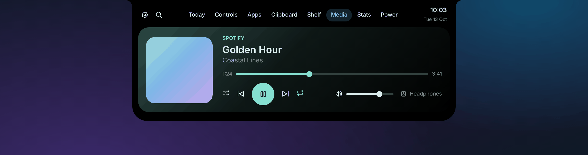
Live rings for CPU, memory, disk and network, plus the five open apps working your PC the hardest.
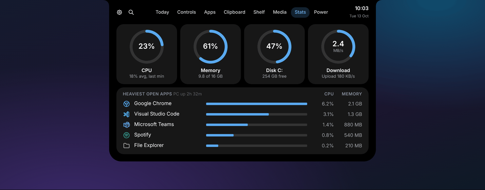
Up time, Windows Update status and more at a glance. Restart and shut down use slide-to-confirm, so they never happen by accident, and they install waiting updates on the way.
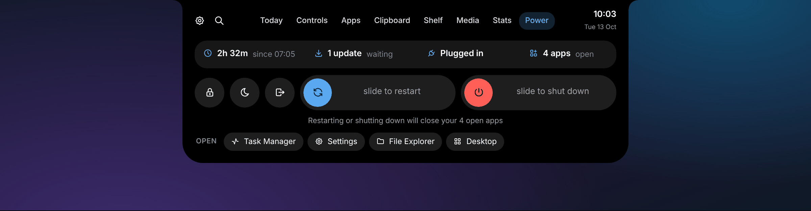
A greeting with the time and date, the weather now and for the next few hours, and a month calendar.
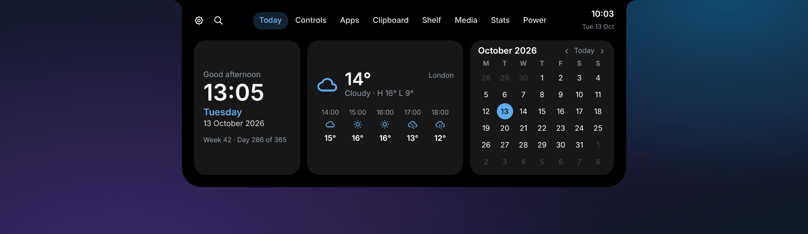
Take a screenshot or finish a download and the island pops out with a preview. Click it and the file is waiting on your Shelf, ready to drag into an email or chat.
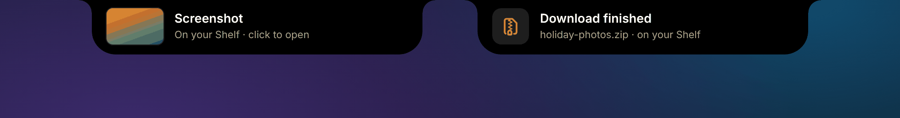
Four island styles (Black, Light, Glow and Outline), Auto light/dark that follows Windows, and any accent colour.
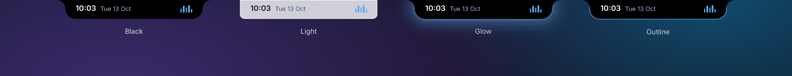
A soft light island with crisp white cards, or the classic black. Auto follows Windows' own light/dark mode and switches instantly.
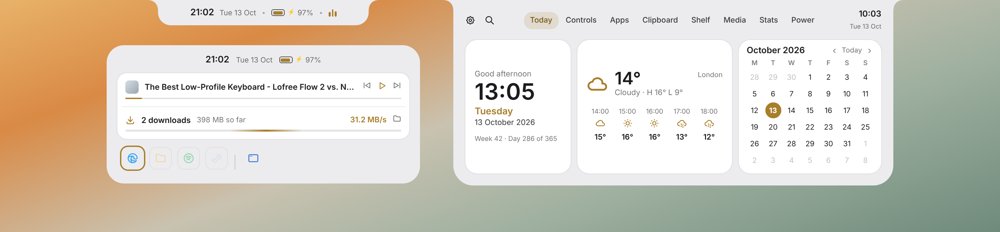
Settings are grouped into Appearance, Behaviour, Pop-ups, Tabs, Weather and About. Hide the tabs you don't use and put the rest in whatever order you like.
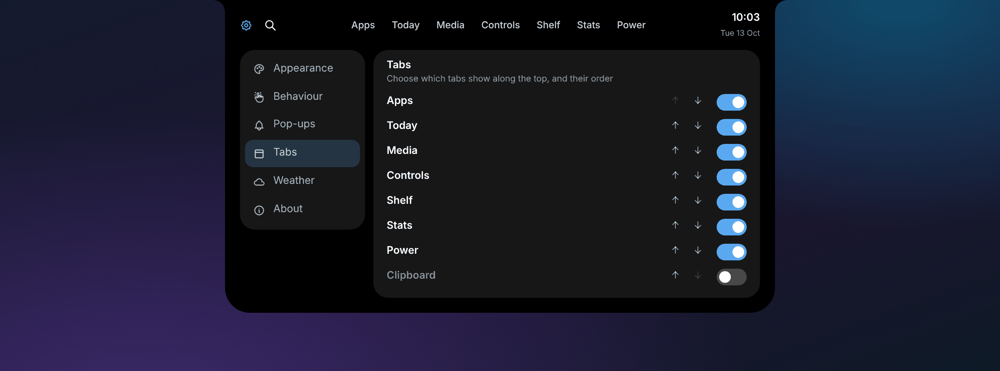
Get it
One file, nothing else to install. Works on Windows 11.
Ctrl+Space any time to search your apps.To quit, right-click the pill → Exit and your normal taskbar comes straight back. If the app is ever force-closed, run Restore taskbar (emergency).cmd from the release zip.
Updates install themselves: when a new version is released here, the island swaps it in while you're not using it. To uninstall, use Settings › About › Remove from this PC…
Privacy: nothing is collected. The only things fetched from the internet are new versions (from GitHub), the weather (Open-Meteo) and your town name (BigDataCloud), using your approximate location.